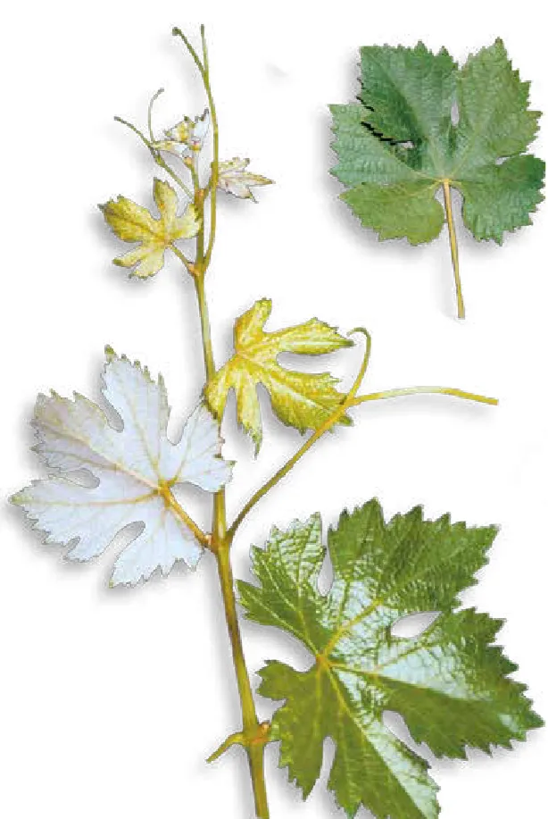
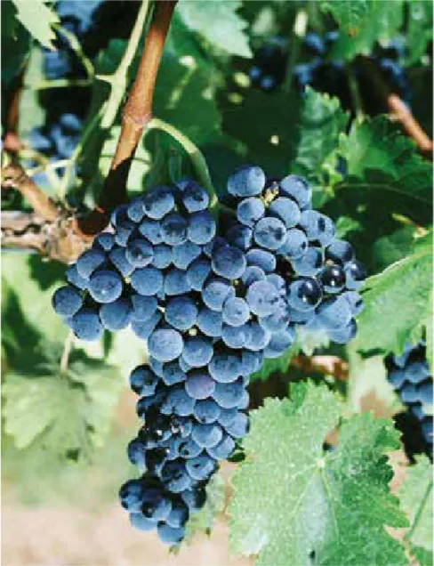

Kapitel 3 · Die portugiesischen Rebsorten
Castelão (R) / João de Santarém / Periquita
Herkunft:
Südportugal. Eine der am weitesten verbreiteten Sorten Portugals, am bekanntesten unter dem Namen Periquita. Der Name stammt von der Cova da Periquita, einem Weinberg im Besitz von José Maria da Fonseca. Von hier aus begann der Siegeszug dieser Sorte. Vicente Alarte (1711) kannte eine Sorte „Castellão“ und wies auf ihre Anfälligkeit für Verrieseln hin.
Weinqualität:
„Sehr angenehm, je nach Klima und Boden unterschiedlich. Unter idealen Bedingungen kann daraus ein bedeutender Wein werden. Die Weine dieser Sorte haben eine granatrote Farbe und ein ausgeprägtes Fruchtaroma von Schwarzer Johannisbeere und Waldfrüchten. Mit der Reife kommen Anklänge an Kompott und sogar an das Fleischige von Wild hinzu. Im Mund ist der Wein weich, ausgewogen mit frischer Säure und hat einen langen Abgang. Er sollte normalerweise jung getrunken werden, wenn er am besten ist“ (Paulo Laureano).

Einstufung:
DOC-Qualitätswein: Porto, Douro, Távora-Varosa, Cova da Beira, Óbidos, Alenquer, Arruda, Torres Vedras, Carcavelos, Tejo, Palmela, Alentejo, Lagos, Portimão, Lagoa, Tavira.
IPR-Qualitätswein: Encostas d’Aire und Alcobaça.
Landwein: Minho, Trás-os-Montes, die Unterregionen Beira Alta und Beira Litoral der Beira Interior, Unterregionen der Provinz Estremadura, Tejo, Terras do Sado, Alentejo und Algarve.
Morphologie:
Junger Trieb (Form der Triebspitze): offen, mit blass karminroter Spitze. Dichte Behaarung.
Junges Blatt: gelblich, sehr dichte Behaarung auf der Unterseite.
Junger Trieb: grün mit grünen Knospen.
Blütenstand (Blütengeschlecht): zwittrig.
Ausgewachsenes Blatt: mittelgroß, fünfeckig, fünflappig, mittelgrüne, unregelmäßige Spreite, mittlere Blasigkeit der Oberseite, dichte Behaarung auf der Unterseite, mittlere bis große konvexe Zähne; leicht offene, keilförmige Stielbucht, offene V-förmige obere Seitenbuchten.
Traube: mittelgroß bis groß, konisch, dicht, kurzer Stiel.
Beere: rund, mittelgroß bis groß, blauschwarz, Haut mittelstark, festes Fruchtfleisch.
Phänologie:
Austrieb: früh.
Blüte: früh.
Farbumschlag der Beere: mittelfrüh.
Lesereife der Beere: mittelfrüh.
Vegetatives und weinbauliches Potenzial:
Wuchskraft der Triebe: mittel.
Schnittholzgewicht: 1.200–2.200 kg/ha, je nach Klon.
Triebhaltung (Wuchsform): aufrecht (heliotrop).
Fruchtbarkeitsindex der Knospen: mittel, 1,75 Blütenstände je Trieb (J. Araújo).
Ertrag: Index 285 (J. Araújo). Hoch, über 20 t/ha. (Statistischer RNSV-Wert: 3,34 kg/Rebe, Mittel von mindestens 40 Klonen in Pernes über 3 Jahre.)
Ertragsbeständigkeit: hoch.
Winkler-Index: 1.690 bei 14 t/ha Ertrag (Montemor).
Empfindlichkeit gegenüber abiotischen Faktoren: robust, aber anfällig für Sonnenbrand.
Traubengröße: mittel bis groß (120–270 g), je nach Klon.
Erziehungssystem: Alle Erziehungssysteme sind geeignet. Verwendet werden sowohl Guyot als auch Kordon, Letzterer vor allem in atlantischen Zonen.
Verrieseln/Kleinbeerigkeit: Traditionelles Material ist äußerst empfindlich, neuere Klone sind recht widerstandsfähig.
Bodenansprüche: tiefgründige, gut durchlässige Podsolböden (Pegões), Schwemmlandböden und pleistozäne Sandböden (Tejo).
Klimaansprüche: sehr anpassungsfähige Sorte; gemäßigtes bis heißes Klima, sofern genug Feuchtigkeit vorhanden ist.
Bewässerung: bei Trockenstress nötig, kann den Wein aber weniger ausgewogen und weniger aromatisch machen.
Verrieseln/Kleinbeerigkeit: gering.
Verderb reifer Beeren: Die Sorte reift früh und sollte daher früh gelesen werden, bevor sie überreif wird und Frische und Säure verliert.
Önologie:
Weintyp: Qualitätswein.
Potenzieller Alkoholgehalt: 12–14 % vol.
Natürliche Säure des Mostes: Gesamtsäure 3,7–5 g/l, je nach Klon sehr unterschiedlich.
Gesamtanthocyane: 237–696 mg/l.
Gesamtphenolindex des Mostes (bei 280 nm): 30–50, je nach Klon.
Oxidationsrisiko des Mostes: gering.
Farbintensität des Weins: mittel, zwischen 8 und 18, je nach Klon.
Farbton des Weins: 0,7–0,85, je nach Klon.

Oligomere Procyanidine: B1 51–127,1 mg/l; B2 12–48 mg/l; T2 9,5–51,2 mg/l.
Gesamtpolyphenolindex (bei 280 nm): 1.255–1.987 mg/l.
Oxidationsrisiko des Weins: hoch. Der Wein sollte jung getrunken werden.
Aromaprofil: Terpenoide 568 μg/l (1997), 147 μg/l (1998); Benzenoide gesamt 568 μg/l (1997), 331 μg/l (1998); Norisoprenoide 1.022 μg/l (1997), 377 μg/l (1998).
Alterungspotenzial: gut, wenn die Weine aus dem richtigen Gebiet (Setúbal) stammen. Reift gut im Fass.